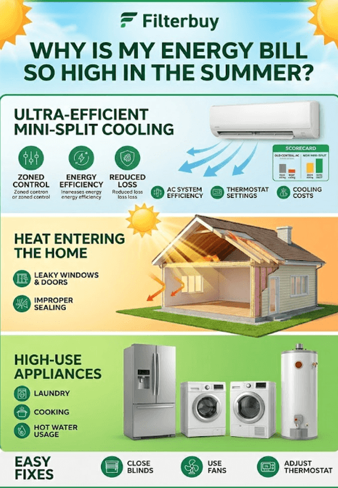
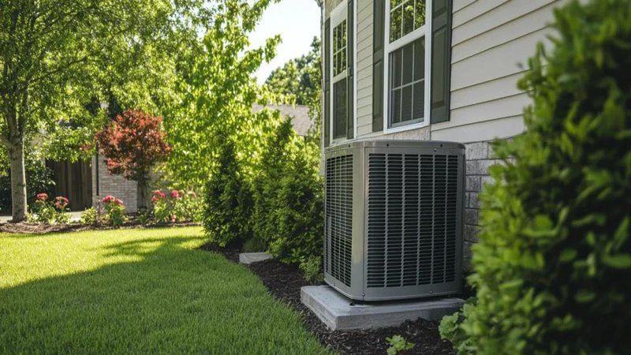
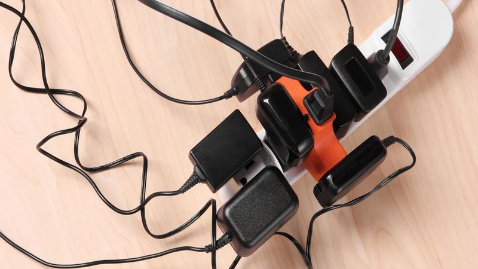
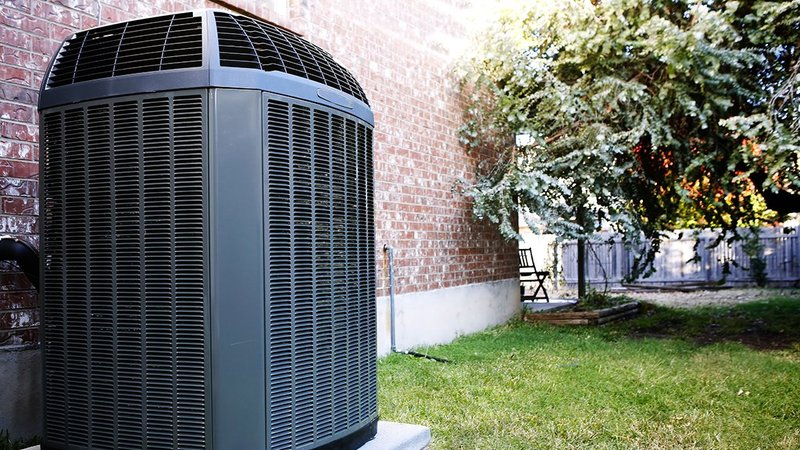
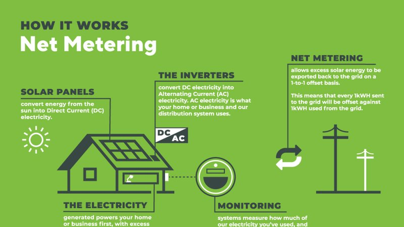
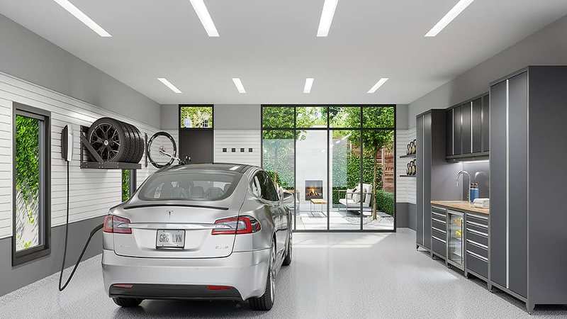
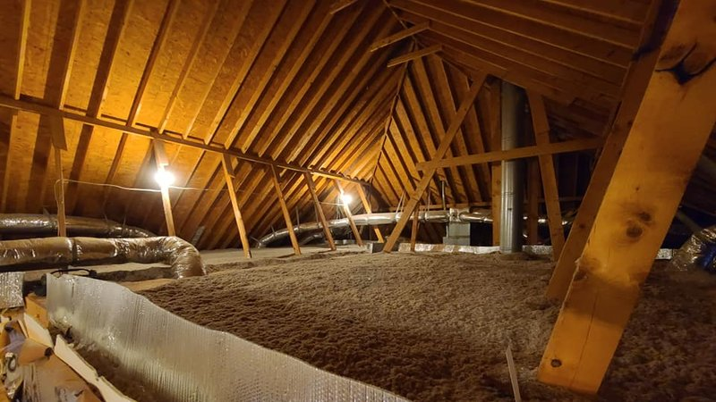

Solar Panel Payback Real Numbers 2026
My solar panels paid for themselves in five years. Not the eight years the installer predicted. Not the ten years the skeptics warned about. Five. And...

The Solar Panels I Installed And The Battery Backup I Wish I Had Bought First
The Solar Panels I Installed and the Battery Backup I Wish I Had Bought First I was standing in my driveway in Denver at 3:00 PM on a Tuesday in July,...

Austin Heat Watt Usage Explosion
Why My Watt Usage Tracker Said I Was "Efficient"—While My Bill Hit $340 Ryan Mitchell I was checking my smart home energy app on the first of August w...

Old Fridge Cost 200 Year Replaced
My refrigerator was older than some of my coworkers. It was a 1998 Whirlpool, avocado green, with a handle that required a specific grip to open and a...

Why Does My Electric Bill Go Up 80 In Winter When Im Not
Why Does My Electric Bill Go Up $80 in Winter When I'm Not Even Home? Why does my electric bill go up $80 in winter when I'm not even home? I asked my...

The Hidden Fees on Your Electric Bill Base Charge | WattWise
I get asked all the time: “Can I do my own energy audit?” The answer is yes. You won’t get a blower door number. You won’t have thermal images. But yo...

Your 5-Step Home Energy Action Plan | WattWise
I had a refrigerator in my basement for about ten years. It was a hand‑me‑down from my parents, a Harvest Gold beast from the late 1990s. It kept beer...

Net Metering vs Net Billing What Solar Owners Must | WattWise
I had a client named Teresa call me last year. She was furious. Her electric bill had gone up $40 in one month, but her usage had barely changed. She ...

The Refrigerator That Was Costing Me 300 a Year An | WattWise
A few winters ago I decided I was going to save money by turning my thermostat way down at night. I set it to 55°F from 10 PM to 6 AM. I thought I was...

EV Charging at Home Level 1 vs Level 2 vs Time-of- | WattWise
I got a call from a guy named Paul last spring. He had just signed a solar contract. Twenty‑four panels, 8.4 kilowatts, $32,000 before incentives. He ...

The Ceiling Fan Lie That Cost Me a Summer | WattWise
I had a client named Ellen call me last year. Her house had single‑pane windows from the 1970s. They were drafty. In winter, she could feel cold air p...

Solar Installation Checklist 6 Things to Verify Be | WattWise
I was talking to a client in Hawaii last year. Her electric bill was $450 for a small two‑bedroom condo. She used air conditioning maybe two hours a d...

Energy Burden When Your Electric Bill Eats 15 of Y | WattWise
I was talking to a neighbor last week. He told me he pays $0.12 per kilowatt‑hour for electricity. I asked him if that was the supply rate or the all‑...

The 1920s Bungalow With No Insulation Corrected | WattWise
I had a client named Sarah call me last spring. She was excited. She had just signed up for her utility’s “100% renewable energy” plan. She told me sh...

The 400 Electric Bill That Was Just a Leaky Duct | WattWise
I was in an attic last week that had fiberglass batts installed in 1985. They were dirty, compressed, and full of mouse droppings. The homeowner, a wo...

The Truth About 100 Renewable Energy Utility Plans | WattWise
I was at a friend’s house last year and noticed she had her dryer running almost constantly. Two kids, lots of sports uniforms, she was doing laundry ...

My Refrigerator Was 25 Years Old Heres What I Did | WattWise
I got an email last month from a woman in California. She had installed solar panels in 2021. Her system was producing plenty of power. Her electric b...

DIY Home Energy Audit A Weekend Walkthrough | WattWise
I got a call from a woman named Laura a few winters ago. She owned a 1925 bungalow in Denver’s historic district. Charming house. Original wood floors...

The Utility Bill That Dropped 40 After One Hour of | WattWise
The smell was the first clue. A musty, burning smell that started faint and got worse over a few weeks. I ignored it. I thought maybe the neighbors we...

State-by-State Electricity Rates Are You Paying To | WattWise
I had a client named Theresa call me last winter. Her gas furnace was 22 years old. It still ran, but it made a noise like a dying animal. She knew sh...

Heat Pumps vs Gas Furnaces The Real Cost Compariso | WattWise
I’ve seen a lot of smart thermostats installed backwards. People buy them, stick them on the wall, set the temperature to 72 degrees, and never touch ...

The 150 Mistake I Made with My Thermostat No Subhe | WattWise
I got a call from a client named Marcus last month. He had just bought an electric car. A Chevy Bolt. He loved it. But his electric bill had gone up $...

Vampire Devices The Always-On Electronics Costing | WattWise
I got a call from a guy named Tom a couple of years ago. He was frustrated. His electric bill had been creeping up for years, and he couldn’t figure o...

10 Ways to Lower Your Electric Bill Without Spendi | WattWise
Let me tell you about a client I’ll call Karen. Not her real name. She lived in a 3,200‑square‑foot house outside Denver. Built in the 80s, central AC...

How to Calculate Your True Cost Per Kilowatt-Hour | WattWise
I had a client named Gary last summer. His air conditioner was 18 years old. It still worked. It still blew cold air. But his electric bills in July w...

The Time I Forgot About My Dryer Vent and Almost B | WattWise
I used to leave my ceiling fans running all day, even when I wasn’t home. I thought they were cooling the room. They’re not. Fans cool people, not spa...
Attic Insulation Fiberglass Cellulose or Spray Foa | WattWise
I have a client named Mike. He’s a retired engineer, which means he’s both the best and the worst kind of person to work with. Best because he loves d...
The House That Used 2000 kWh More Than Its Twin Ne | WattWise
After 25 years of auditing homes, I’ve seen the same mistakes over and over. People buy expensive windows when they need attic insulation. They instal...

One Year After Solar The Real Numbers Nobody Tells | WattWise
I met a guy at a barbecue last summer. He told me his electric bill was out of control. He said he was thinking about buying solar panels or a new AC....

The Clothes Dryer Was Eating 200 a Year and I Didn | WattWise
I met a woman named Rosa at a community energy fair last year. She lived in a small apartment with her two kids. She worked full‑time as a home health...

Window Replacement vs Window Film Which Saves More | WattWise
I had a fridge in my basement for about six years. It was an old Kenmore, probably from the late 1990s. I used it for drinks and frozen pizzas. I neve...
Smart Thermostat Programming Guide Save 200Year Wi | WattWise
I was at a friend’s house a few months ago. He was complaining about his electric bill. “It’s always high,” he said. “Even when we’re on vacation.” He...

What Is SEER2 and Why Your Old AC Just Became Obso | WattWise
A few years ago, I got a call from a woman named Diane. She lived in a subdivision where all the houses were built in the same year with the same floo...